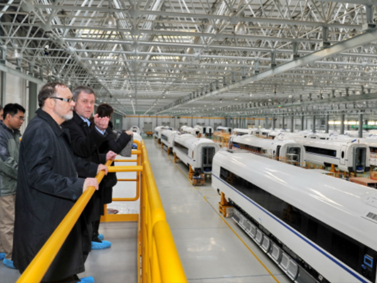

中国铁路走向世界
2004年，中国中标洛比托（安哥拉）——卢奥（刚果民主共和国接壤的边境城）的铁路，已于2014年8月竣工，全长1344公里。
2011年1月，尼日利亚阿布贾——卡杜纳铁路项目启动，已于2014年11月竣工。在2014年11月20日，由中国铁建参与承建的尼日利亚沿海铁路项目，正式签署了商务合同，全长186.5公里。
2011年12月签约埃塞段，2012年4月开工，2012年1月签约吉布提段，2013年9月开工，此项目为吉布提——埃塞俄比亚铁路，全程约770公里。
2013年11月25日，匈塞铁路自（匈牙利首都）布达佩斯——（塞尔维亚首都）贝尔格莱德，全长350公里，其中匈牙利境内166公里，塞尔维亚境内184公里。
2014年5月11日，肯尼亚蒙巴萨港——内罗毕铁路的相关合作协议的签署，全长480公里。
2014年8月3日，泰国执政当局批准了连接中国的铁路项目，起点终点分别是中国的昆明和新加坡，月845公里。
2015年11月13日，中国和老挝合作协议签署（以中方为主投资建设并运营），中国昆明——老挝万象，全长418公里。
中国独有的保温隔热材料赢得印度地铁订单。在大洋彼岸的波士顿，中国陆续拿下的地铁订单，已经超过了400列。

中国高铁改变世界铁路局面
中国高铁凭借着高铁技术先进、安全性能高、价格实惠、运行经验丰富等优势，向海外市场发起进攻，带领中国高铁走向世界的趋势也越来越明显。中印合作只是中国高铁走向世界跨出的第一步，未来中国高铁会继续前行，跟更多国家进行合作，推进中国高铁的整体水平和我国综合国力的提升。
随着经济全球化的趋势加强，国际间的合作进一步加强，”一带一路“战略的实施，中国高铁走向海外是具有一定的前瞻性。预计，在 未来，中国将会越来越重视国际合作的机会，加强推进中国高铁的整体水平，进而促进我国综合国力的提升。将进一步打开中国高铁面向世界市场的全新局面。